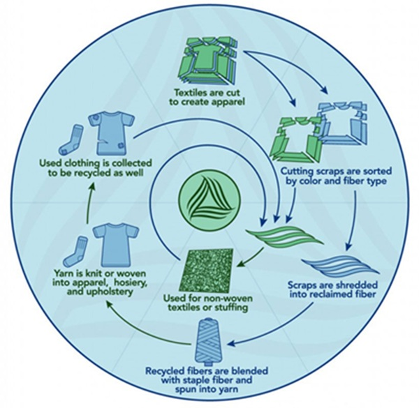
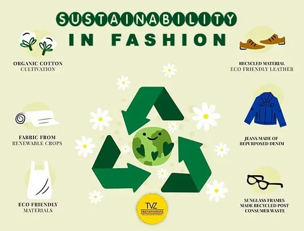
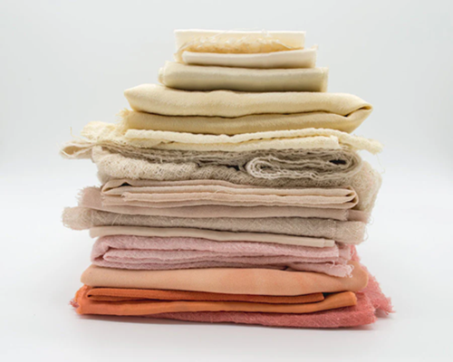
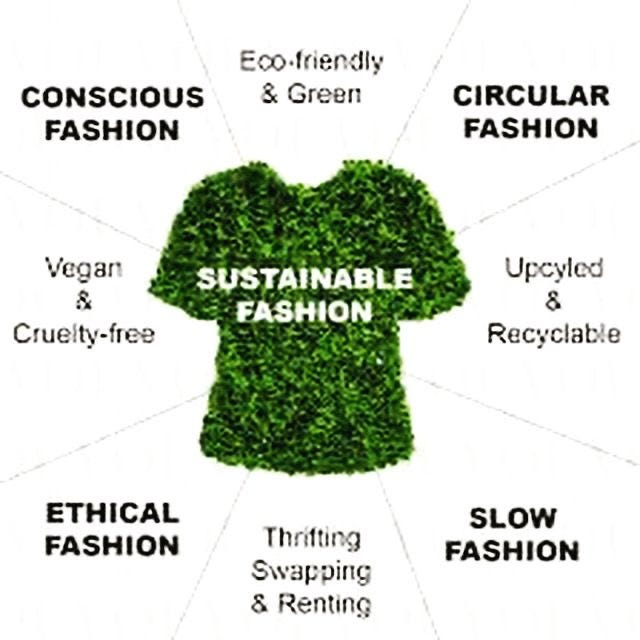
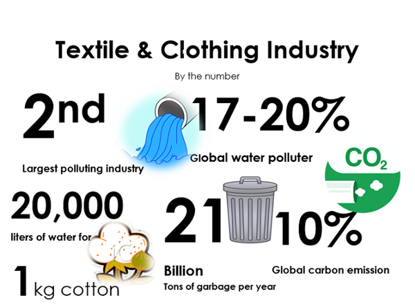

What is Sustainable Fashion?
Sustainable fashion refers to clothing that is designed, manufactured, distributed, and used in environmentally and socially responsible ways. It reduces pollution, conserves resources, and promotes ethical labor practices. Opting for eco-conscious materials and upcycling garments helps cut down the fashion industry's carbon footprint.


Core Pillars of Sustainability
- Environmental: Reducing pollution, waste, and resource consumption
- Social: Supporting fair wages, safe working conditions, and labor rights
- Economic: Creating long-lasting, quality garments that save money and reduce waste over time
Common Sustainable Fabrics
- Organic cotton
- Bamboo
- Tencel (Lyocell)
- Recycled polyester
- Hemp



The Life Cycle of Sustainable Fashion
- Design: Prioritizing low-impact materials and minimal waste patterns
- Production: Ethical manufacturing practices
- Use: Longevity, repair, and reuse
- End of Life: Recycling or upcycling to prevent landfill waste
Want to Learn More?
Check out our sustainability resources and brand directory to get started on your journey.
Sustainable Brand List